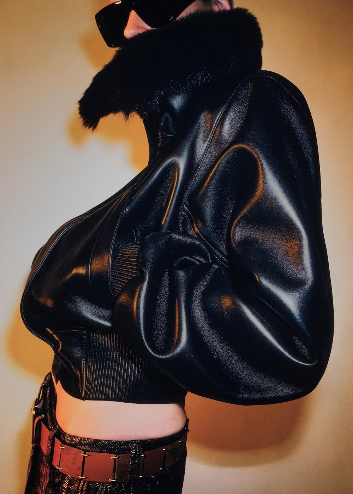
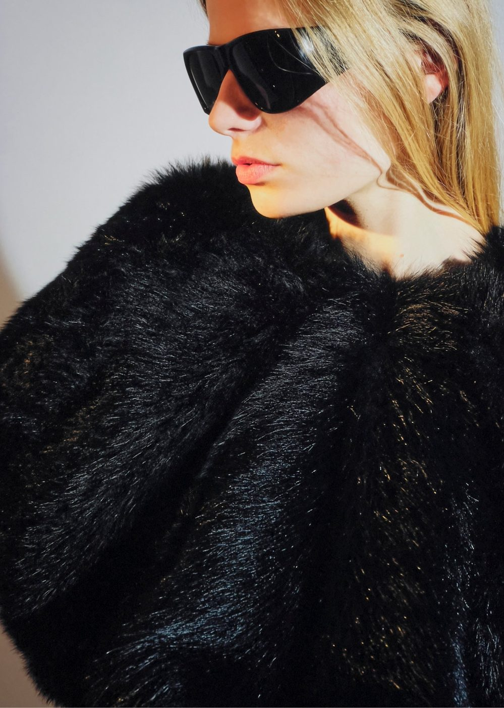
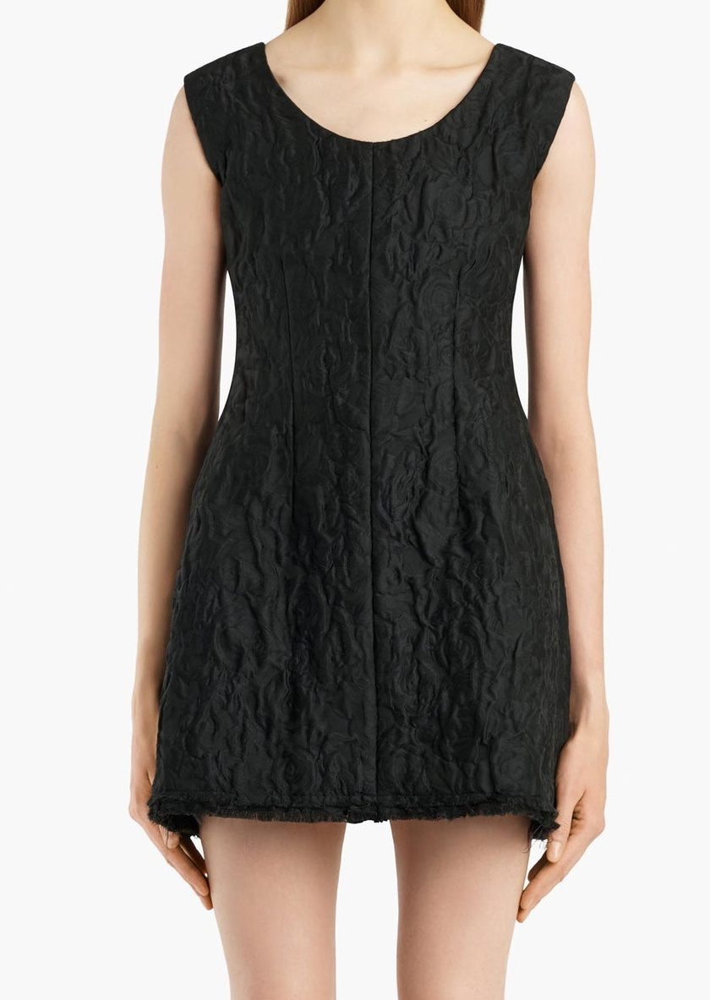
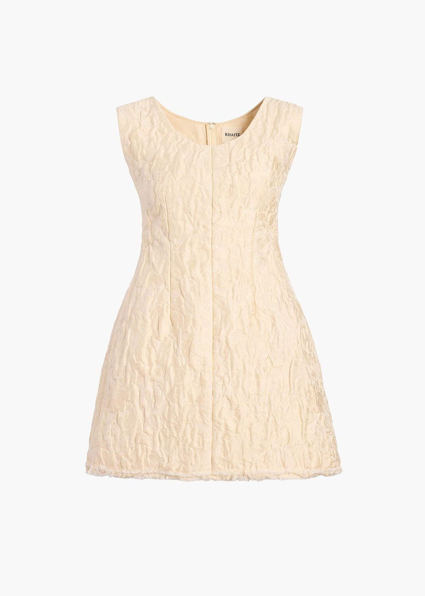
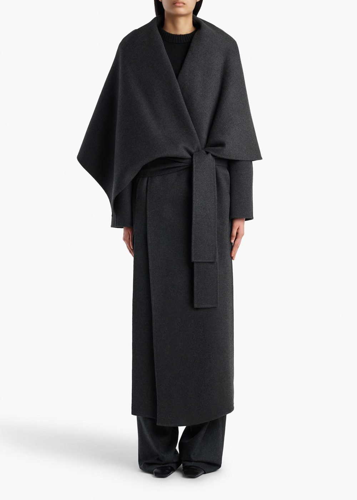
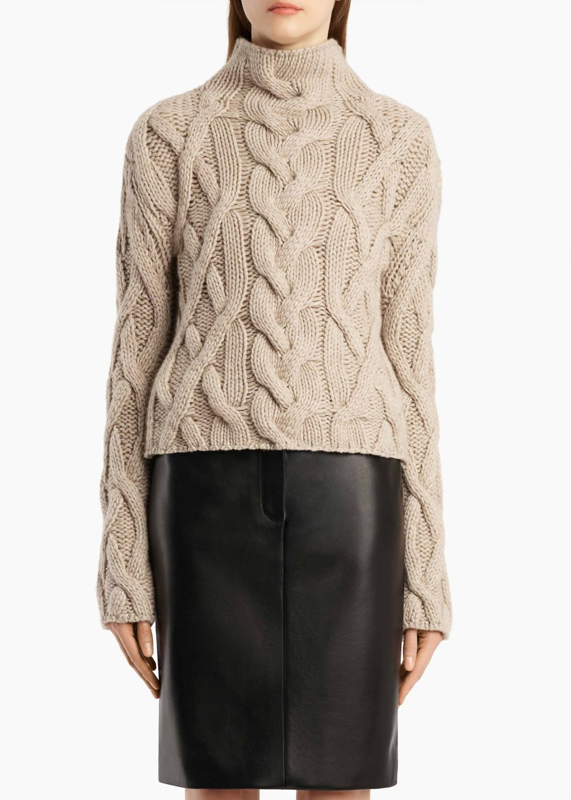

Khaite
Company study · 2026-11-20
Soft, controlled and sculpted. Khaite builds its look on shaped dresses, wrapped coats and heavy knits in black, charcoal, pearl and sand, with leather and shearling as the dark, glossy notes. Silhouette leads and surface follows: flared jacquard, a belted shawl collar, a cable-knit neck. The result is muted luxury, quiet in color and exact in line.
 (01)
(01)


(02)

(03)

(04)

(05)

(06)

(07)Palette · measured from images
#F8F8F8#0B0C12#EAD8C3#C7AD94#BA8654#C2C2C4Visual themes
- Shaped dresses
- Key motifs: flared jacquard skirts, scooped necklines, layered sheer black. Sub motifs: short hems, cap sleeves, pearl and black pairs.
- Sculpted leather and shearling
- Key motifs: puffed leather shoulders, shearling coats, dark glasses. Sub motifs: warm backdrops, belts as one accent.
- Soft tailoring and heavy knits
- Key motifs: belted wrap coats, shawl collars, cable-knit high necks. Sub motifs: charcoal wool, sepia and sand yarns, black leather trousers.
Color palette
- Studio white #f8f8f8
- The ground behind every product shot; the largest share of the measurement.
- Black #0b0c12
- Dresses, leather, shearling and the dark runway ground.
- Pearl #ead8c3
- The pearl jacquard dress and skin tones.
- Sand #c7ad94
- The cable knit and warm backdrops.
- Camel #ba8654
- Leather trim and amber editorial light.
- Light gray #c2c2c4
- Studio shadow and charcoal wool highlights.
Visual elements
- Photography
- Dark runway and warm studio editorials for mood; white-ground product shots with a front, side, back and detail view for each piece.
- Type and graphics
- Letterspaced KHAITE wordmark in capitals, plain navigation, collection names in title case.
- Layout habits
- Home page opens on a full-width season banner; collection pages are tight grids of portrait tiles.
Notable products
- Harper dress
- Flared jacquard shape in black and pearl.
- Sonti coat
- Belted charcoal wool with a wrap shawl collar.
- Mountain sweater
- Cable knit with a high neck.
Method and limits
- Palette basis
- Measured from the seven board images with k-means clustering in Lab, six clusters kept. The white ground of the product shots is part of the measurement.
- Limits
- Read on 2026-11-20 from https://khaite.com/ (home, dresses, knitwear, outerwear and coats, handbags, shoes) and the Spring-Summer 2027 and Resort 2027 pages. Images are shown at up to 1400 px on the long side. Fiber content and construction were not read.
Credits and licenses
(01) Black slip dress with cream trim on the Spring-Summer 2027 runway. Khaite. Brand image, study use. source
(02) Sculpted black leather top, Holiday 2026 editorial. Khaite. Brand image, study use. source
(03) Black shearling coat and dark sunglasses, Holiday 2026 editorial. Khaite. Brand image, study use. source
(04) Harper dress in black jacquard, close crop of the bodice and hem. Khaite. Brand image, study use. source
(05) Harper dress in pearl jacquard, flat view of the flared shape. Khaite. Brand image, study use. source
(06) Sonti coat in charcoal wool with a belted wrap shawl collar. Khaite. Brand image, study use. source
(07) Mountain sweater in sepia, cable knit with a high neck. Khaite. Brand image, study use. source